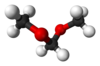

dimethoxymethane

Definition: Dimethoxymethane, also called methylal, is a colorless flammable liquid with a low boiling point, low viscosity and excellent dissolving power. It has a chloroform-like odor and a pungent taste. It is the dimethyl acetal of formaldehyde. Dimethoxymethane is soluble in three parts water and miscible with most common organic solvents.
Source: Wikipedia
Wikipedia Page
Wikidata Page